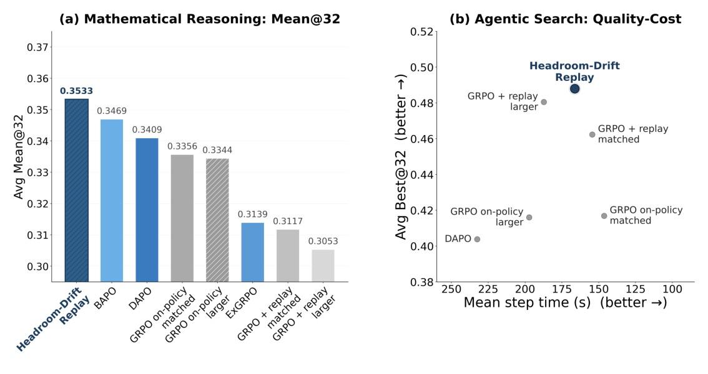
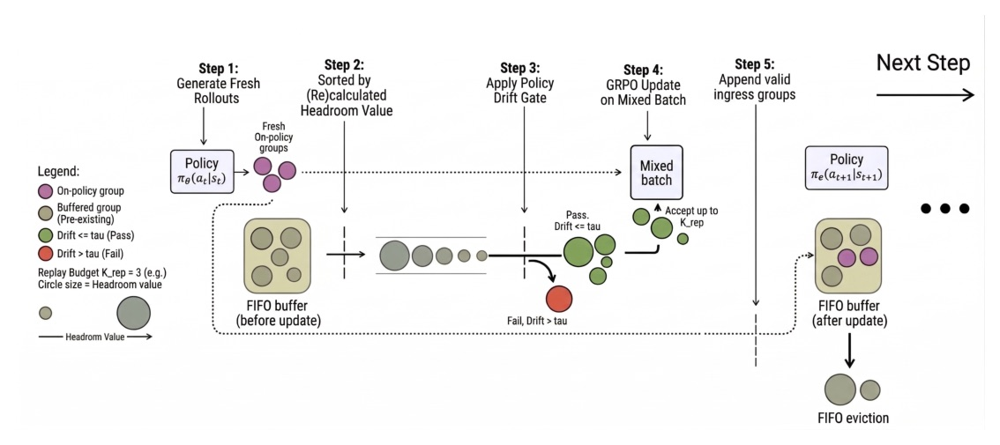
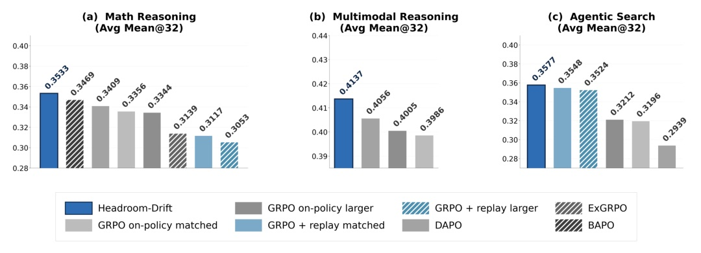
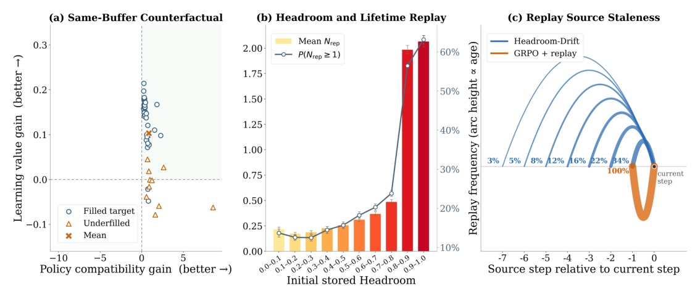
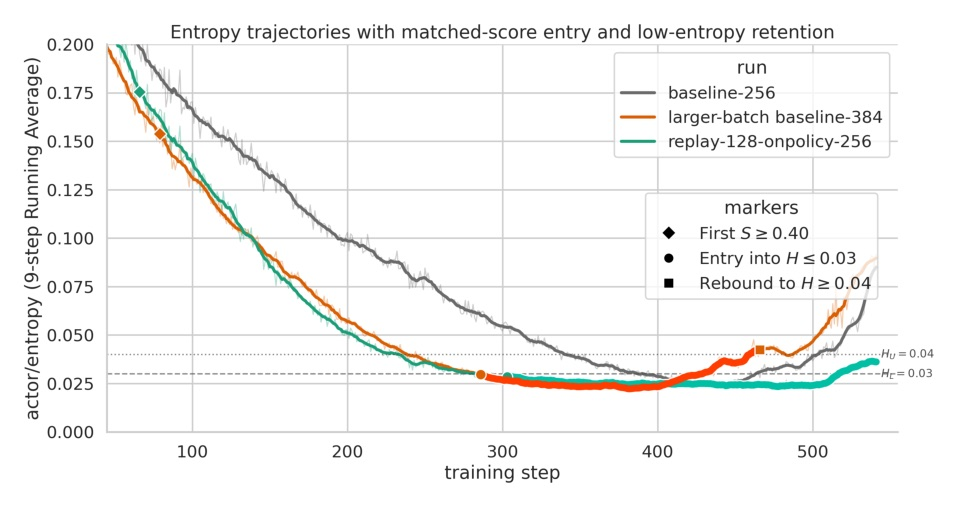
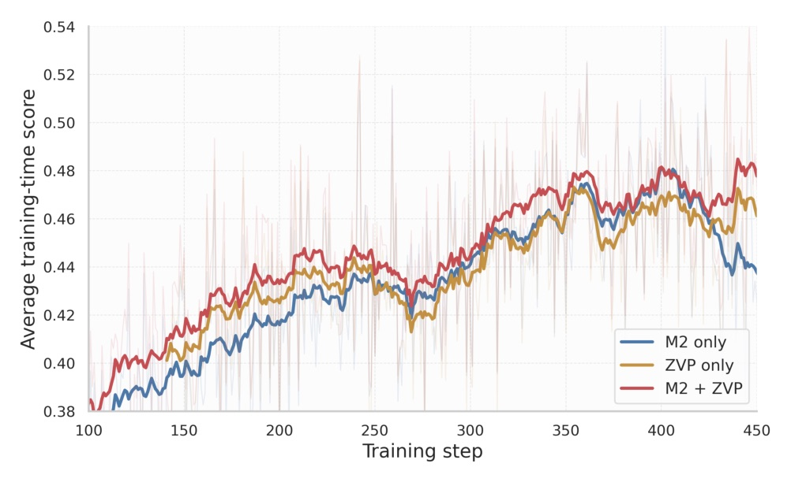

把 GRPO replay 從「要不要重用」拆成 learning value 與 current-policy compatibility 兩個控制問題。

Replay 不是多塞舊資料。它要先問：這個 group 還有沒有可學的方向，而且現在的 policy 還認不認得它。

Stored group
Same update form
Fresh 與 replayed groups 都進同一 GRPO objective；差別只在 denominator 是哪個 reference policy。
Domains
Metrics / baselines
| Method | Macro Avg Mean@32 | Fresh responses |
|---|---|---|
| GRPO on-policy matched | 0.3356 | 1,843,200 |
| GRPO on-policy larger | 0.3344 | 2,764,800 |
| DAPO | 0.3409 | 2,445,312 |
| ExGRPO | 0.3139 | 1,785,600 |
| BAPO | 0.3469 | 2,027,520 |
| GRPO+r matched | 0.3117 | 1,843,200 |
| ★ Headroom-Drift | 0.3533 | 1,843,200 |

| Method | Avg Mean@32 | Avg Best@32 | Step time |
|---|---|---|---|
| GRPO on-policy larger | 0.3212 | 0.4160 | 197.2s |
| GRPO+r matched | 0.3548 | 0.4623 | 154.4s |
| GRPO+r larger | 0.3524 | 0.4805 | 187.3s |
| ★ Headroom-Drift | 0.3577 | 0.4879 | 166.3s |
| Metric | GRPO+r matched | Headroom-Drift |
|---|---|---|
| Macro Avg Mean@4 | 0.3737 | 0.3955 |
| Weighted Mean@4 | 0.4158 | 0.4298 |
| Macro Avg Best@4 | 0.5133 | 0.5224 |
| Weighted Best@4 | 0.5556 | 0.5638 |
限制：caption 明確說 controlled comparison is based on one run per method。小 margin 不能過度解讀。
| Method | Macro Avg Mean@32 | Weighted Mean@32 |
|---|---|---|
| GRPO on-policy matched | 0.3986 | 0.2740 |
| GRPO on-policy larger | 0.4005 | 0.2788 |
| DAPO | 0.4056 | 0.2793 |
| ★ Headroom-Drift | 0.4137 | 0.2883 |
增益的主因不是 replay volume，而是把「高 value」和「仍 near-policy」的 group 聚在一起。

| Statistic | Value |
|---|---|
| Used replay mean source age | 2.67 |
| Replay pool mean source age | 3.32 |
| Used replay age >=2 | 66.00% |
| Used replay age >=3 | 44.06% |
| Mean distinct source ages / update | 4.07 |
| Updates with >=3 ages | 85.71% |

| Run | Entry delay | Rebound delay |
|---|---|---|
| GRPO on-policy matched | 318 | 121 |
| ★ Headroom-Drift | 237 | 261 |
| GRPO on-policy larger | 207 | 180 |
對 stricter on-policy control (b384)：Headroom-Drift 更早達到 score anchor，但較晚進 low entropy。
| Phase | age >=3 share | distinct ages/update | updates >=3 ages |
|---|---|---|---|
| Early learning | 48.08% | 4.33 | 100.00% |
| Score-rise | 59.35% | 4.83 | 100.00% |
| Pre-collapse | 33.50% | 3.80 | 85.00% |
| Collapse | 2.94% | 1.67 | 16.67% |
| Condition | τ | Mean acceptance | Replay-KL behavior |
|---|---|---|---|
| TIGHT | 0.001 | 6.4% | 0.0005 to 0.00003 as replay vanishes |
| ★ MODERATE | 0.01 | 40.2% | stable at about 0.002 |
| LOOSE | 0.1 | 94.4% | 0.0045 to 0.0170 |

| Variant | Best@32 | Mean@32 |
|---|---|---|
| Policy Drift only | 0.7820 | 0.6794 |
| Headroom only | 0.8100 | 0.7140 |
| ★ Headroom-Drift full | 0.8200 | 0.7215 |
| Condition | Final reward |
|---|---|
| wrong answer + format failure | 0.0 |
| wrong answer + format success | 0.1 |
| correct answer + format failure | 0.9 |
| correct answer + format success | 1.0 |
The question is not whether to replay, but how to control replay itself: which stored experience should re-enter training, and under what conditions.
問題不是要不要 replay，而是 replay 本身該怎麼控制：哪些 stored experience 應該重回訓練，以及在什麼條件下重回。§1 p.2
The fresh on-policy stream remains unchanged... Any change in training dynamics therefore traces to replay-side control alone.
fresh on-policy stream 不變；因此訓練動態的變化可歸因於 replay-side control。§3.1 p.3-4
Replay selection is not merely deciding one-shot inclusion versus exclusion; it is redistributing lifetime training exposure toward a comparatively small subset of repeatedly reused groups.
replay selection 不只是一次性納入或排除，而是把 lifetime training exposure 重新分配給少數會被反覆重用的 groups。Appendix D.4 p.31-32
At matched score levels, both low-entropy entry and rebound are delayed under replay.
在 matched score level 下，replay 讓 low-entropy entry 與 rebound 都延後。Appendix E.3.2 p.35
今天的 takeaway：LLM RL replay 的核心不是 buffer 大小，而是可學性與 policy compatibility 的分離控制。